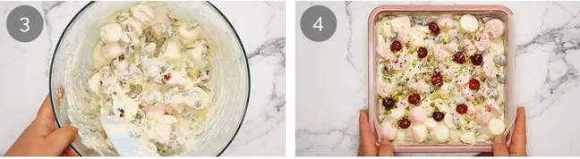
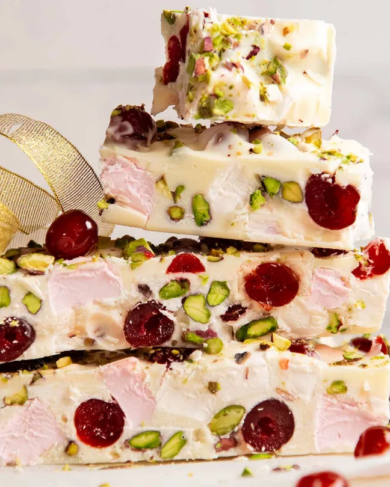
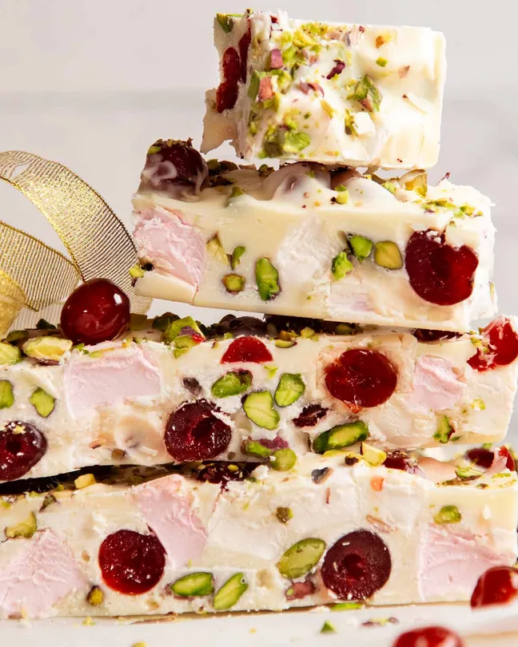

What Rocky Roads taste like
Beyond how fun they look, Rocky Roads are all about indulgent flavour and contrast in texture. You get rich, smooth melted chocolate combined with crunchy biscuit pieces and soft, fluffy marshmallows that create a perfect balance of creamy, crunchy, and chewy textures in every bite. They are sweet, chocolatey, and deeply satisfying, with each mouthful melting together beautifully and leaving a rich, comforting finish.
Ingredients for Rocky Roads
White chocolate - I use white chocolate melts for easy melting, but a finely chopped block works too. Lindt white chocolate is ideal because it melts smoothly.
Glacé cherries - These add bright festive colour and a soft texture that works perfectly with coconut, unlike chewy dried fruit.
Pistachios - Chosen for their green colour and rich flavour. Roasting them enhances the taste and makes them extra special.
Marshmallows - Essential for adding softness and balance. They lighten the richness of the chocolate and improve the texture.
Desiccated coconut - Even if you can't see it, coconut adds the classic rocky road flavour and brings everything together.
How to make White Rocky Roads
Melt the chocolate, add all the ingredients, then set the mixture in the fridge until firm.
Cut most of the marshmallows in half (about two-thirds). A knife works well if cutting several at once, though scissors can also be used.
Melt the chocolate with the oil in the microwave in short bursts, stirring between each. Start with two 30-second bursts, then continue with three to four 20-second bursts on high power.
Stirring with a chopstick helps move the chocolate easily and reduces sticking. Alternatively, the chocolate can be melted using a double boiler over gently simmering water.

Once the chocolate is smooth, add all the mix-ins and stir until everything is evenly coated.
Pour the mixture into a 20 cm (8-inch) pan lined with baking paper. Spread it into the corners with a spatula, then tap the pan firmly on the counter to level the surface.
Set in the fridge for 3 hours. Don't cover it with cling wrap - the warm chocolate will cause condensation and water will drip onto your rocky road. Nobody wants a watery rocky road!
Cut into desired pieces. My default is to cut into 5 strips, then into sizes appropriate for intended purposes - either squares (for piling onto a plate to share, small gifts), small logs (each strip in half or thirds) or large “nougat-size” bars for gifting with impact (and I'll choose the prettiest bars with the cherries in the perfect position!).
 
